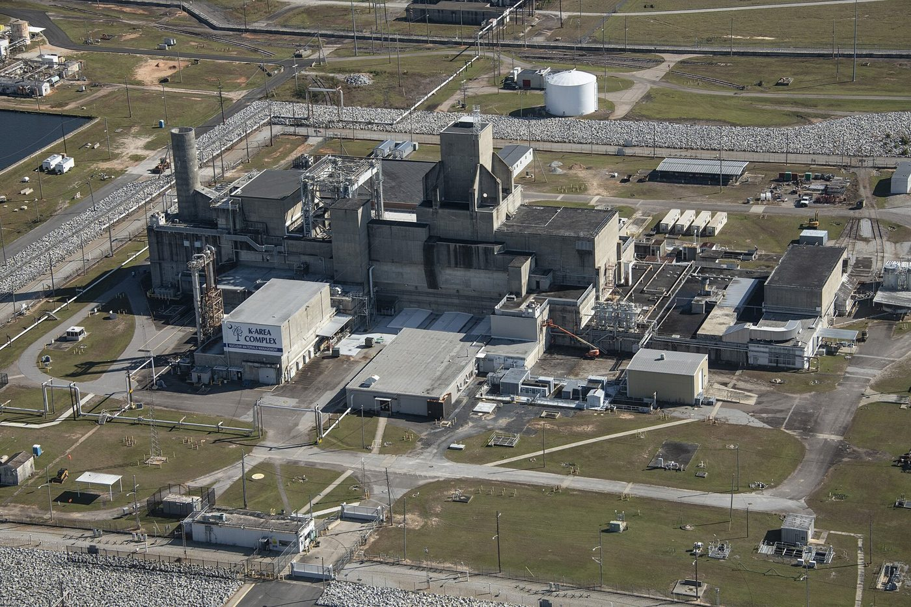

Part 4 of 8 in Chapter 2
1987–1988: The Reactors Stop
A National Academy of Sciences panel reviewed safety at the defense production reactors for DOE (Department of Energy) in 1987 (IA). Du Pont announced that year that it would not stay on as operator (WB: srs.gov 1980s). In February 1988 a Senate subcommittee heard DOE, the plant manager and Du Pont on why L reactor's power had been cut (IA).
That year an internal list of thirty significant reactor incidents became public. G. C. Ridgely, a Du Pont technical supervisor and physicist, had dated it August 14, 1985, under the title SRP Reactor Incidents of Greatest Significance (WB: OSTI). He was one of 11 Du Pont scientists and engineers who ranked the thirty incidents at the five reactors from 1957 to 1985 (DL: Congressional Record, 1988).
The official history presents the report as meant to show safety improving (WB: ch. 19); the Senate investigator who obtained it remembers it as evidence of concealment (WB: Alliance for Nuclear Accountability). DOE's 1990 impact statement on running the reactors again summarized all thirty in a table, and noted that seven had released radioactivity (IA: DOE, 1990, Table 4-15).
The reactors went down one after another — K in April, L in June, P in August — over emergency cooling concerns (WB: ch. 19). On September 30, 1988, the General Accounting Office told Senator Glenn's and Representative Synar's committees how P reactor's start-up had gone ahead despite a reactivity shortfall (a chain reaction weaker than predicted) larger than any the plant had seen (DL; WB: gao.gov).

.jpg){kind=link}
Glenn's bill to put the weapons plants under outside safety oversight was already in hearings (DL). On October 1, the day after the GAO testimony, the New York Times put the story on its front page. It reported severe accidents at all five reactors, kept secret for up to 31 years.
They were documented in Ridgely's 19-page memorandum to his superiors at Du Pont (WB: New York Times). The article's full text was entered in the Congressional Record that month (DL).
The Times kept the story on its pages through the fall. On October 3 DOE said that it, and the Atomic Energy Commission before it, had kept the accidents secret over 28 years. It cleared Du Pont, which had reported them to DOE's office in Aiken (WB: New York Times).
Energy Secretary John S. Herrington promised to restart one reactor in January and all three by late the next summer, since tritium decays at 5.5 percent a year and the weapons that use it need a fresh supply (WB: New York Times).
By November the paper was asking how Congress had missed the signs (WB: New York Times). In December DOE's own advisory committee of 12 engineers and scientists said K reactor should not restart until it was checked against severe earthquakes. The same day the Natural Resources Defense Council sued for a full study of the restart's effects on the environment and public health (WB: New York Times).
Days later a crack was found in a pipe carrying coolant to K reactor (WB: New York Times). A DOE report for Congress put the cost of replacing old equipment and cleaning up across the weapons complex at $81 billion from 1990 to 2010 (WB: New York Times).
The shutdowns ended Du Pont's time at the plant, and soon the plant's old name, as A Name Change tells.